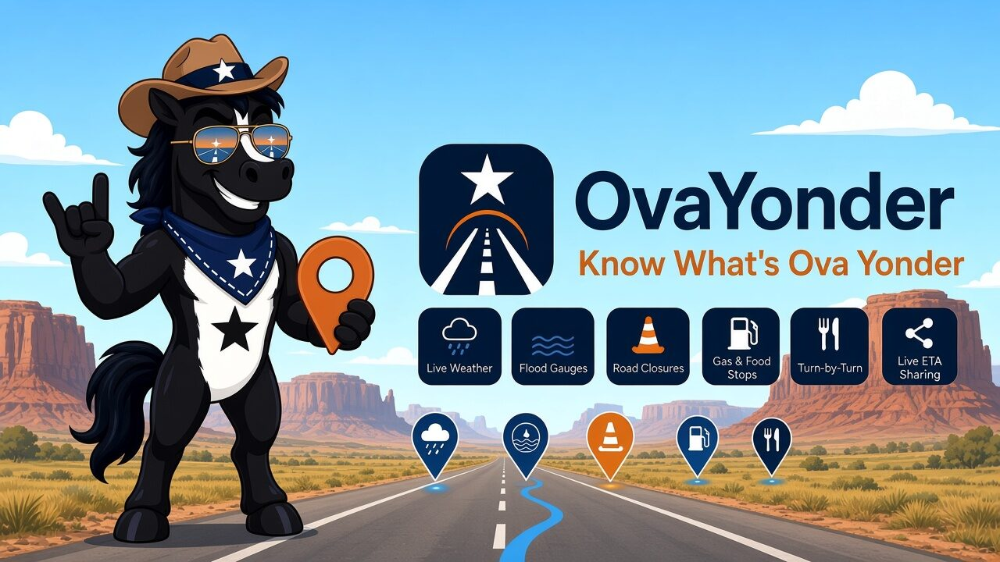
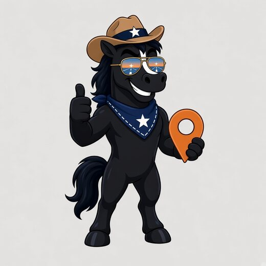

OvaYonder
Know What's Ova Yonder.
A Houston map that helps you decide whether a drive is a bad idea in a storm. Pick where you're headed and OvaYonder checks the route against flood gauges, road closures, high water, and weather alerts, then marks it Clear, Caution, or Avoid.

One look tells you if the drive makes sense.
Every route on the map gets a score, and the card shows exactly which rule fired so you can see why.
Clear
None of the flood, closure, or weather rules fired along your route.
Caution
A gauge nearby is rising, heavy rain is falling, a lane is closed, or a watch is in effect.
Avoid
A gauge near your route is at flood level, TranStar reports high water, a road is closed, or a flood or severe warning covers the route.
The score is advisory, not a promise that a road is safe. Gauges, closures, and alerts can be missing or late. A Clear result is never permission to drive into water. Turn around, don't drown.
Built for Houston roads and Houston weather.
🌧️Live weather & alerts
Current conditions, the next 12 hours, Apple Weather alerts, and National Weather Service warnings on one card.
🌊Flood gauges
Harris County Flood Warning System gauges on the map, colored normal, rising, or near flood stage. Tap one for the reading.
🚧Closures & high water
Houston TranStar road closures, lane closures, and high-water reports, with early warnings for closures ahead on your route.
🧭Turn-by-turn
Heading-up directions with spoken turns, a route-status pill, and a landscape dash view when the phone is mounted sideways.
⛽Gas & food up ahead
The next gas stations and restaurants still in front of you, with distance and which side of the road they're on.
🛢️Fuel range
Set your tank and mpg, and OvaYonder estimates miles to reserve and calls out the last station you can reach.
🏟️Event traffic
Games, concerts, and conventions at NRG, Daikin Park, Toyota Center, and other big venues, flagged when your drive passes during the crowd window.
📍Live ETA sharing
Text someone a link that follows your trip until you arrive. Shared through iCloud and deleted when the trip ends. Works with Siri.
⭐Favorites & people
Home, Work, saved spots, and contacts with an address are one tap from a scored route.

Your data stays yours.
No account and no ads, and nothing tracks you across other apps. Your saved places, fuel settings, and drive history stay on your phone. Live ETA sharing only happens when you start it, and the shared trip is deleted when it ends.